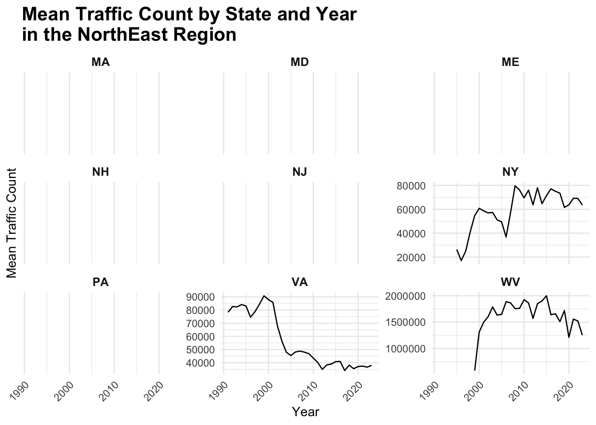

Nature vs Machines
library(httr)
library(jsonlite)
res=GET('https://developer.nps.gov/api/v1/newsreleases?limit=10000&api_key=B9nDpbkbrb3kSOjz6kXSxMJ3d6MSpUvt1QqYdeyn')
data = res %>% content("text") %>% jsonlite::fromJSON() %>% as_tibble()data %>%
janitor::clean_names() %>%
select(data) %>%
unnest(data) %>%
view()
In this page we will explore historical data to inform us on how the exponential development and accessibility of automobiles to the general public impacts our interaction with national parks.
Deciding on the topic
To examine how our interactions with national parks have evolved over time, there are numerous potential aspects to consider. Instead of selecting a topic at random, we wondered if news articles about parks could provide insight into major areas of focus.
For instance, if certain topics repeatedly appear in the news, it could indicate ongoing changes or developments in those aspects of national parks, making them worthy of further investigation.
library(tm)
library(tidytext)
library(stringr)
library(dplyr)
library(ggplot2)
text_data = data %>%
janitor::clean_names() %>%
select(data) %>%
unnest(data) %>%
select(title, abstract, relatedParks, releaseDate)
clean_text = function(text) {
text <- tolower(text)
text <- removePunctuation(text)
text <- removeNumbers(text)
text <- stripWhitespace(text)
text <- removeWords(text, stopwords("en"))
return(text)
}
text_data$cleaned_title = sapply(text_data$title, clean_text)
tidy_titles = text_data %>%
unnest_tokens(word, cleaned_title)library(wordcloud)
word_count = tidy_titles %>%
count(word, sort = TRUE)
wordcloud(words = word_count$word,
freq = word_count$n,
min.freq = 20,
scale = c(4, 0.5),
max.words = 100,
random.order = FALSE,
colors = brewer.pal(8, "Dark2"))word_count = tidy_titles %>%
count(word, sort = TRUE)
top_20_words = word_count %>%
top_n(20, n)
ggplot(top_20_words, aes(x = reorder(word, n), y = n)) +
geom_bar(stat = "identity", fill = "steelblue") +
coord_flip() + # Flip coordinates for better readability
labs(title = "Top 20 Most Frequent Words",
x = "Word",
y = "Frequency") +
theme_minimal() +
theme(axis.text.x = element_text(angle = 45, hjust = 1))Understandably, ‘national’ and ‘park’ are the two most frequented words in articles. As for the other words, there was no one that appeared significantly more frequently than the others.
Alternatively, we determined that the most relevant development in recent history is the introduction of automobiles to the public. This is highly relevant for examining how our exponential relationship with automobiles and other forms of transport has changed our interaction with national parks, particularly in terms of human-wildlife interactions as traffic to these parks has increased.
Initial Data Exploration and Recognition of Limitations
There are a number of different states in the U.S. territory, each with a selection of natioanl parks. Each state also has a mix of national parks and of which can individual have multiple traffic counters.
The below graph shows the traffic count merely three national parks in New York.
library(plotly)
his_traffic_df = read_csv(file = "data/(east) Query Builder for Traffic Counts (1985 - Last Calendar Year).csv",
na = c("NA", ",", ".")) %>%
janitor::clean_names() %>%
filter(park_name %in% c("Fire Island NS", "Gateway NRA", "Saratoga NHP"))
p <- ggplot(his_traffic_df, aes(x = year, y = traffic_count_total, color = traffic_counter)) +
geom_point() +
geom_smooth(method = "loess", se = FALSE) +
labs(title = "Traffic Count Totals by Year for Selected Parks in New York",
x = "Year",
y = "Total Traffic Count",
color = "Traffic Counter") +
theme_minimal() +
theme(legend.position = "bottom") +
facet_wrap(~ park_name, scales = "free_y")
# Convert ggplot to plotly
p_plotly = ggplotly(p) %>%
layout(
legend = list(
orientation = "h", # Horizontal legend
xanchor = "center",
x = 0.5,
y = -0.2,
yanchor = "top",
font = list(size = 10), # Adjust font size for better readability
itemwidth = 40, # Adjust width of each legend item
tracegroupgap = 5 # Add space between legend items
),
height = 600 # You can also adjust the plot height
)
p_plotlyAnalyzing every national park in every state, taking into consideration different traffic counters would be overwhelming. Not to mention traffic count data was also recorded based on monthly and annual counts.
In order to make sense of the large scale complexity, we decided to use the annual mean traffic count for each state to provide a nationwide analysis of traffic impact on national parks.
Mean Annual Traffic Count by State
Separating the data by states, it shows each states’ average annual national park traffic count.
We decided rather than taking each individual traffic counter to plot the mean traffic count for each national park, then the mean traffic count for the state across its national parks.
read_csv(file = "data/(east) Query Builder for Traffic Counts (1985 - Last Calendar Year).csv",
na = c("NA", ",", ".")) %>%
janitor::clean_names() # Ensure all parks have corresponding states
park_to_state = tibble::tibble(
park_name_total = c(
"Acadia NP", "Allegheny Portage Railroad NHS", "Appomattox Court House NHP",
"Assateague Island NS", "Booker T. Washington NM", "Cape Cod NS",
"Colonial NHP", "Delaware Water Gap NRA", "Fire Island NS",
"Fort McHenry NM & HS", "Fort Necessity NB", "Fredericksburg & Spotsylvania NMP",
"Gateway NRA", "Gauley River NRA", "George Washington Birthplace NM",
"Gettysburg NMP", "Home of Franklin D. Roosevelt NHS", "Hopewell Furnace NHS",
"Johnstown Flood NMEM", "Katahdin Woods and Waters NM",
"Martin Van Buren NHS", "Minute Man NHP", "Morristown NHP",
"New River Gorge NP & PRES", "Paterson Great Falls NHP", "Petersburg NB",
"Richmond NBP", "Saint-Gaudens NHP", "Saratoga NHP", "Shenandoah NP",
"Steamtown NHS", "Upper Delaware S&RR", "Valley Forge NHP",
"Vanderbilt Mansion NHS"
),
state = c(
"ME", "PA", "VA", "MD", "VA", "MA", "VA", "NJ", "NY", "MD", "PA", "VA",
"WV", "WV", "VA", "PA", "NY", "PA", "PA", "PA", "ME", "NY", "MA", "NJ",
"VA", "VA", "NH", "NY", "VA", "PA", "PA", "PA", "NY", "PA" # Add the missing state(s) here
)
)
traffic_counts_df = park_to_state %>%
full_join(his_traffic_df, by = "park_name_total")
library(dplyr)
library(ggplot2)
# Calculate mean traffic_count_total for each state and year
mean_traffic_counts_by_state_year = traffic_counts_df %>%
group_by(state, year) %>%
summarise(mean_traffic_count = mean(traffic_count_total, na.rm = TRUE), .groups = "drop")
# Calculate additional statistics for each state
traffic_count_stats = traffic_counts_df %>%
group_by(state) %>%
summarise(
min_traffic_count = min(traffic_count_total, na.rm = TRUE),
year_of_min_traffic_count = year[which.min(traffic_count_total)],
max_traffic_count = max(traffic_count_total, na.rm = TRUE),
year_of_max_traffic_count = year[which.max(traffic_count_total)],
difference_min_max = max_traffic_count - min_traffic_count,
.groups = "drop"
)
# Plot the data with faceting by state
ggplot(mean_traffic_counts_by_state_year, aes(x = year, y = mean_traffic_count)) +
geom_line() +
facet_wrap(~ state, scales = "free_y") +
theme_minimal() +
labs(title = "Mean Traffic Count by State and Year\nin the NorthEast Region",
x = "Year",
y = "Mean Traffic Count") +
theme(
strip.text = element_text(size = 10, face = "bold"),
plot.title = element_text(size = 16, face = "bold"),
axis.text.x = element_text(angle = 45, hjust = 1)
)
read_csv(file = "data/(Alaska, InterM, MW) Query Builder for Traffic Counts (1985 - Last Calendar Year).csv",
na = c("NA", ",", ".")) %>%
janitor::clean_names() library(dplyr)
library(tibble)
library(tidyr)
# Create the vectors with park names and states
park_name_total = c(
"Amistad NRA", "Apostle Islands NL", "Arches NP", "Arkansas Post NMEM", "Badlands NP",
"Bandelier NM", "Big Bend NP", "Big Thicket NPRES", "Bighorn Canyon NRA",
"Black Canyon of the Gunnison NP", "Bryce Canyon NP", "Buffalo NR", "Canyon de Chelly NM",
"Canyonlands NP", "Capitol Reef NP", "Capulin Volcano NM", "Carlsbad Caverns NP",
"Cedar Breaks NM", "Chaco Culture NHP", "Chickasaw NRA", "Colorado NM", "Coronado NMEM",
"Curecanti NRA", "Cuyahoga Valley NP", "Denali NP & PRES", "Devils Tower NM", "Dinosaur NM",
"El Malpais NM", "El Morro NM", "Florissant Fossil Beds NM", "Fort Laramie NHS",
"Fort Larned NHS", "Fossil Butte NM", "George Washington Carver NM", "Glacier NP",
"Glen Canyon NRA", "Grand Canyon NP", "Grand Portage NM", "Grand Teton NP",
"Great Sand Dunes NP & PRES", "Guadalupe Mountains NP", "Homestead NHP", "Hopewell Culture NHP",
"Hot Springs NP", "Hubbell Trading Post NHS", "Indiana Dunes NP", "Jewel Cave NM",
"John D. Rockefeller, Jr. MEM PKWY", "Katmai NP & PRES", "Kenai Fjords NP", "Keweenaw NHP",
"Lake Meredith NRA", "Lincoln Boyhood NMEM", "Little Bighorn Battlefield NM",
"Lyndon B. Johnson NHP", "Mesa Verde NP", "Minuteman Missile NHS", "Missouri NRR",
"Montezuma Castle NM", "Mount Rushmore NMEM", "Natural Bridges NM", "Navajo NM",
"Niobrara NSR", "Organ Pipe Cactus NM", "Ozark NSR", "Padre Island NS", "Palo Alto Battlefield NHP",
"Pea Ridge NMP", "Petrified Forest NP", "Petroglyph NM", "Pictured Rocks NL", "Pipe Spring NM",
"River Raisin NBP", "Rocky Mountain NP", "Saguaro NP", "San Antonio Missions NHP",
"Scotts Bluff NM", "Sleeping Bear Dunes NL", "Sunset Crater Volcano NM", "Tallgrass Prairie NPRES",
"Theodore Roosevelt NP", "Tonto NM", "Tuzigoot NM", "Valles Caldera NPRES", "Walnut Canyon NM",
"Washita Battlefield NHS", "White Sands NP", "Wilson's Creek NB", "Wind Cave NP", "Yellowstone NP",
"Zion NP"
)
state = c(
"TX", "WI", "UT", "AR", "SD", "NM", "TX", "TX", "MT/WY", "CO", "UT", "AR", "AZ", "UT", "UT",
"NM", "NM", "UT", "NM", "OK", "CO", "AZ", "CO", "OH", "AK", "WY", "CO/UT", "NM", "NM", "CO",
"WY", "KS", "WY", "MO", "MT", "AZ/UT", "AZ", "MN", "WY", "CO", "TX", "NE", "OH", "AR", "AZ",
"IN", "SD", "WY", "AK", "AK", "MI", "TX", "IN", "MT", "TX", "CO", "SD", "NE/SD", "AZ", "SD",
"UT", "AZ", "NE", "AZ", "MO", "TX", "TX", "AR", "AR", "AZ", "NM", "MI", "AZ", "MI",
"AZ", "TX", "NE", "MI", "AZ", "KS", "ND", "AZ", "AZ", "NM", "AZ", "OK", "NM", "MO", "SD",
"WY/MT/ID", "UT"
)
# If lengths are not the same, stop and fix the mismatch
if (length(park_name_total) != length(state)) {
stop("Lengths of park_name_total and state do not match!")
}
# Create the tibble
AL_IM_MW_park_to_state = tibble(
park_name_total = park_name_total,
state = state
)
# Separate rows with multiple states
AL_IM_MW_park_to_state = AL_IM_MW_park_to_state %>%
separate_rows(state, sep = "/")
AL_IM_MW_his_traffic_df =
read_csv(file = "data/(Alaska, InterM, MW) Query Builder for Traffic Counts (1985 - Last Calendar Year).csv", na = c("NA", ",", ".")) %>%
janitor::clean_names()
AL_IM_MW_traffic_counts_df = AL_IM_MW_park_to_state %>%
full_join(AL_IM_MW_his_traffic_df, by = "park_name_total")
library(dplyr)
library(ggplot2)
# Calculate mean absolute traffic count for each state and year
AL_IM_MW_mean_traffic_counts_by_state_year = AL_IM_MW_traffic_counts_df %>%
group_by(state, year) %>%
summarise(mean_traffic_count = mean(abs(traffic_count_total), na.rm = TRUE), .groups = "drop")
# Calculate additional statistics for each state using absolute traffic count
AL_IM_MW_traffic_count_stats = AL_IM_MW_traffic_counts_df %>%
group_by(state) %>%
summarise(
min_traffic_count = min(abs(traffic_count_total), na.rm = TRUE),
year_of_min_traffic_count = year[which.min(abs(traffic_count_total))],
max_traffic_count = max(abs(traffic_count_total), na.rm = TRUE),
year_of_max_traffic_count = year[which.max(abs(traffic_count_total))],
difference_min_max = max_traffic_count - min_traffic_count,
.groups = "drop"
)
# Plot the data with faceting by state
ggplot(AL_IM_MW_mean_traffic_counts_by_state_year, aes(x = year, y = mean_traffic_count)) +
geom_line() +
facet_wrap(~ state, scales = "free_y") +
theme_minimal() +
labs(title = "Mean Traffic Count by State and Year\nin the Alaska, Intermountain, and MidWest Regions",
x = "Year",
y = "Mean Absolute Traffic Count") +
theme(
strip.text = element_text(size = 10, face = "bold"),
plot.title = element_text(size = 16, face = "bold"),
axis.text.x = element_text(angle = 45, hjust = 1)
)
read_csv(file = "data/(CAP_PAC) Query Builder for Traffic Counts (1985 - Last Calendar Year).csv",
na = c("NA", ",", ".")) %>%
janitor::clean_names() library(dplyr)
library(tibble)
library(tidyr)
# Create the vectors with park names and states
park_name_total = c(
"Big Hole NB", "Cabrillo NM", "Catoctin Mountain Park", "Chesapeake & Ohio Canal NHP",
"City of Rocks NRES", "Crater Lake NP", "Craters of the Moon NM & PRES", "Death Valley NP",
"Devils Postpile NM", "Fort Point NHS", "Fort Vancouver NHS", "Fort Washington Park",
"George Washington MEM PKWY", "Golden Gate NRA", "Great Basin NP", "Greenbelt Park",
"Haleakala NP", "Harpers Ferry NHP", "Hawaii Volcanoes NP", "John Day Fossil Beds NM",
"Joshua Tree NP", "Kings Canyon NP", "Lake Mead NRA", "Lake Roosevelt NRA", "Lassen Volcanic NP",
"Lava Beds NM", "LBJ Memorial Grove on the Potomac", "Lewis & Clark NHP", "Manassas NBP",
"Manzanar NHS", "Mojave NPRES", "Monocacy NB", "Mount Rainier NP", "National Capital Parks East",
"Nez Perce NHP", "North Cascades NP", "Olympic NP", "Oregon Caves NM & PRES", "Pinnacles NP",
"Piscataway Park", "Point Reyes NS", "Prince William Forest Park", "Pu'ukohola Heiau NHS",
"Redwood NP", "Ross Lake NRA", "San Juan Island NHP", "Santa Monica Mountains NRA", "Sequoia NP",
"Tule Lake NM", "War in the Pacific NHP", "Whiskeytown NRA", "Whitman Mission NHS", "Yosemite NP"
)
state = c(
"MT", "CA", "MD", "MD/WV", "ID", "OR", "ID", "CA/NV", "CA", "CA", "WA", "MD",
"DC/VA/MD", "CA", "NV", "MD", "HI", "WV/MD/VA", "HI", "OR", "CA", "CA", "NV/AZ",
"WA", "CA", "CA", "DC", "ID/MT/OR/WA", "VA", "CA", "CA", "MD", "WA", "DC/MD",
"ID", "WA", "WA", "OR", "CA", "MD", "CA", "VA", "HI", "CA", "WA", "WA", "CA",
"CA", "CA", "GU", "CA", "WA", "CA"
)
# If lengths are not the same, stop and fix the mismatch
if (length(park_name_total) != length(state)) {
stop("Lengths of park_name_total and state do not match!")
}
# Create the tibble
CAP_PAC_park_to_state = tibble(
park_name_total = park_name_total,
state = state
)
# Separate rows with multiple states
CAP_PAC_park_to_state = CAP_PAC_park_to_state %>%
separate_rows(state, sep = "/")
CAP_PAC_his_traffic_df =
read_csv(file = "data/(CAP_PAC) Query Builder for Traffic Counts (1985 - Last Calendar Year).csv", na = c("NA", ",", ".")) %>%
janitor::clean_names()
CAP_PAC_traffic_counts_df = CAP_PAC_park_to_state %>%
full_join(CAP_PAC_his_traffic_df, by = "park_name_total")
library(dplyr)
library(ggplot2)
# Calculate mean absolute traffic count for each state and year
CAP_PAC_mean_traffic_counts_by_state_year = CAP_PAC_traffic_counts_df %>%
group_by(state, year) %>%
summarise(mean_traffic_count = mean(abs(traffic_count_total), na.rm = TRUE), .groups = "drop")
# Calculate additional statistics for each state using absolute traffic count
CAP_PAC_traffic_count_stats = CAP_PAC_traffic_counts_df %>%
group_by(state) %>%
summarise(
min_traffic_count = min(abs(traffic_count_total), na.rm = TRUE),
year_of_min_traffic_count = year[which.min(abs(traffic_count_total))],
max_traffic_count = max(abs(traffic_count_total), na.rm = TRUE),
year_of_max_traffic_count = year[which.max(abs(traffic_count_total))],
difference_min_max = max_traffic_count - min_traffic_count,
.groups = "drop"
)
# Plot the data with faceting by state
ggplot(CAP_PAC_mean_traffic_counts_by_state_year, aes(x = year, y = mean_traffic_count)) +
geom_line() +
facet_wrap(~ state, scales = "free_y") +
theme_minimal() +
labs(title = "Mean Traffic Count by State and Year\nin National Capital and Pacific West Regions",
x = "Year",
y = "Mean Absolute Traffic Count") +
theme(
strip.text = element_text(size = 10, face = "bold"),
plot.title = element_text(size = 16, face = "bold"),
axis.text.x = element_text(angle = 45, hjust = 1)
)read_csv(file = "data/SE Query Builder for Traffic Counts (1985 - Last Calendar Year).csv",
na = c("NA", ",", ".")) %>%
janitor::clean_names() library(dplyr)
library(tibble)
library(tidyr)
# Create the vectors with park names and states
park_name_total = c(
"Abraham Lincoln Birthplace NHP", "Andersonville NHS", "Andrew Johnson NHS",
"Big Cypress NPRES", "Big South Fork NRRA", "Biscayne NP", "Blue Ridge PKWY",
"Camp Nelson NM", "Canaveral NS", "Cane River Creole NHP", "Cape Hatteras NS",
"Cape Lookout NS", "Charles Pinckney NHS", "Chattahoochee River NRA",
"Chickamauga & Chattanooga NMP", "Congaree NP", "Cowpens NB",
"Cumberland Gap NHP", "De Soto NMEM", "Everglades NP", "Fort Caroline NMEM",
"Fort Donelson NB", "Fort Frederica NM", "Fort Matanzas NM", "Fort Pulaski NM",
"Fort Raleigh NHS", "Great Smoky Mountains NP", "Guilford Courthouse NMP",
"Gulf Islands NS", "Horseshoe Bend NMP", "Jean Lafitte NHP & PRES",
"Kennesaw Mountain NBP", "Kings Mountain NMP", "Little River Canyon NPRES",
"Mammoth Cave NP", "Moores Creek NB", "Natchez NHP", "Natchez Trace PKWY",
"Ninety Six NHS", "Obed W&SR", "Ocmulgee Mounds NHP", "Russell Cave NM",
"Shiloh NMP", "Stones River NB", "Timucuan EHP", "Vicksburg NMP",
"Wright Brothers NMEM"
)
state = c(
"KY", "GA", "TN", "FL", "TN/KY", "FL", "VA/NC", "KY", "FL", "LA", "NC", "NC",
"SC", "GA", "GA/TN", "SC", "SC", "KY/TN/VA", "FL", "FL", "FL", "TN", "GA",
"FL", "GA", "NC", "TN/NC", "NC", "FL/MS", "AL", "LA", "GA", "SC", "AL", "KY",
"NC", "MS", "MS/AL/TN", "SC", "TN", "GA", "AL", "TN", "TN", "FL", "MS", "NC"
)
# If lengths are not the same, stop and fix the mismatch
if (length(park_name_total) != length(state)) {
stop("Lengths of park_name_total and state do not match!")
}
# Create the tibble
SE_park_to_state = tibble(
park_name_total = park_name_total,
state = state
)
# Separate rows with multiple states
SE_park_to_state = SE_park_to_state %>%
separate_rows(state, sep = "/")
SE_his_traffic_df =
read_csv(file = "data/SE Query Builder for Traffic Counts (1985 - Last Calendar Year).csv", na = c("NA", ",", ".")) %>%
janitor::clean_names()
SE_traffic_counts_df = SE_park_to_state %>%
full_join(SE_his_traffic_df, by = "park_name_total")
library(dplyr)
library(ggplot2)
# Calculate mean absolute traffic count for each state and year
SE_mean_traffic_counts_by_state_year = SE_traffic_counts_df %>%
group_by(state, year) %>%
summarise(mean_traffic_count = mean(abs(traffic_count_total), na.rm = TRUE), .groups = "drop")
# Calculate additional statistics for each state using absolute traffic count
SE_traffic_count_stats = SE_traffic_counts_df %>%
group_by(state) %>%
summarise(
min_traffic_count = min(abs(traffic_count_total), na.rm = TRUE),
year_of_min_traffic_count = year[which.min(abs(traffic_count_total))],
max_traffic_count = max(abs(traffic_count_total), na.rm = TRUE),
year_of_max_traffic_count = year[which.max(abs(traffic_count_total))],
difference_min_max = max_traffic_count - min_traffic_count,
.groups = "drop"
)
# Plot the data with faceting by state
ggplot(SE_mean_traffic_counts_by_state_year, aes(x = year, y = mean_traffic_count)) +
geom_line() +
facet_wrap(~ state, scales = "free_y") +
theme_minimal() +
labs(title = "Mean Traffic Count by State and Year\nin SouthEast Region",
x = "Year",
y = "Mean Absolute Traffic Count") +
theme(
strip.text = element_text(size = 10, face = "bold"),
plot.title = element_text(size = 16, face = "bold"),
axis.text.x = element_text(angle = 45, hjust = 1)
)
The mean annual traffic counts for each state across the years are presented below. There does not seem to be a dominant increasing or decreasing trend of traffic counts across all states. This suggests that time is not the unique variable determining traffic count, but that also potentially the state and type of national park influences average annual traffic counts.
It would be interesting to investigate whether obvious increases or decreases in traffic counts are due to changing interest in national parks or the introduction of popular parks to promote visitation.
Shiny App
With the nuances of each state and traffic count data, we decided that rather than to create iterative analyses into each state and their national parks, we went down the path of curating and data wrangling to contribute towards the wider knowledge community through our shiny app. The app can be found here.
Pairing Traffic Count with Parking Lot Data
We could expect that high traffic counts in a state’s national parks might equate to a higher ratio of parking lots to parks in that state. We focused on the ratio rather than the absolute number of parking lots because states with more national parks would naturally need more parking. This approach avoids disproportionate representation and ensures a fair comparison.
The US Plotly map colors states based on the ratio of national park parking lots to the number of parks.
library(dplyr)
# Merge the two dataframes by adding rows
merged_East_AL_traffic_counts = bind_rows(AL_IM_MW_traffic_count_stats, traffic_count_stats)
merged_East_AL_CAP_traffic_counts = bind_rows(merged_East_AL_traffic_counts, CAP_PAC_traffic_count_stats)
FULL_merged_traffic_counts = bind_rows(merged_East_AL_CAP_traffic_counts, SE_traffic_count_stats)geo_coord_df =
read_csv(file = "data/NPS_-_Points_of_Interest_(POIs)_-_Geographic_Coordinate_System.csv", na = c("NA", ",", ".")) %>%
janitor::clean_names()library(tigris)
library(sf)
library(dplyr)
library(viridis)
library(plotly)
# Convert geo_coord_df to spatial dataframe with latitude/longitude coordinates
map_geo_coord_df = st_as_sf(geo_coord_df, coords = c("x", "y"), crs = 4326)
# Get US states shapefile (boundary) and ensure CRS is correct
US_states = states(cb = TRUE)library(tigris)
library(sf)
library(dplyr)
library(viridis)
library(plotly)
# Convert geo_coord_df to spatial dataframe with latitude/longitude coordinates
map_geo_coord_df = st_as_sf(geo_coord_df, coords = c("x", "y"), crs = 4326)
# Get US states shapefile (boundary) and ensure CRS is correct
US_states = states(cb = TRUE)
US_states_sf = st_as_sf(US_states)
# Transform coordinate reference system (if necessary)
US_states_sf = st_transform(US_states_sf, crs = 4326)
# Spatial join between parking lot coordinates and US states polygons
map_geo_coord_sf = st_join(map_geo_coord_df, US_states_sf, join = st_within)
# Filter for Parking Lots and remove missing state names
map_geo_coord_sf = map_geo_coord_sf %>%
filter(poitype == "Parking Lot") %>%
filter(!is.na(NAME))
# Count parking lots per state
parking_lots_per_state = map_geo_coord_sf %>%
group_by(NAME) %>%
summarise(parking_lots = n(), .groups = "drop")
# Convert parking_lots_per_state to a regular dataframe (no geometry)
parking_lots_per_state_df = as.data.frame(parking_lots_per_state)
# Merge the parking_lots_per_state data with US_states_sf using left_join
US_states_sf = US_states_sf %>%
left_join(parking_lots_per_state_df, by = "NAME")
# Prepare the data for plotting with plotly
US_states_sf_df = as.data.frame(US_states_sf)
US_states_sf_df$geometry = NULL # Remove the geometry for plotly
# Create an interactive plotly map
plot_ly(data = US_states_sf_df, type = "choropleth",
locations = ~STUSPS, locationmode = "USA-states",
z = ~parking_lots, text = ~paste("State:", NAME, "<br>Parking Lots:", parking_lots),
colorscale = "Viridis", reversescale = TRUE,
marker = list(line = list(color = "black", width = 0.5))) %>%
colorbar(title = "Parking Lots") %>%
layout(title = "Number of Parking Lots in National Parks per State",
geo = list(scope = 'usa',
projection = list(type = 'albers usa'),
showlakes = TRUE,
lakecolor = toRGB('white')))US_states_sf = st_as_sf(US_states)
# Transform coordinate reference system (if necessary)
US_states_sf = st_transform(US_states_sf, crs = 4326)
# Spatial join between geo_coord_df and US states polygons
map_geo_coord_sf = st_join(map_geo_coord_df, US_states_sf)
# Filter for "Parking Lot" and remove rows with missing state names
map_geo_coord_sf = map_geo_coord_sf %>%
filter(poitype == "Parking Lot") %>%
filter(!is.na(NAME)) # Ensure no missing state names
# Count unique national parks per state (based on unique unitname)
national_parks_per_state = map_geo_coord_sf %>%
group_by(NAME) %>%
summarise(national_parks = n_distinct(unitname), .groups = "drop")
# Count the number of parking lots per state
parking_lots_per_state = map_geo_coord_sf %>%
group_by(NAME) %>%
summarise(parking_lots = n(), .groups = "drop")
# Merge the parking lots and national parks counts into one regular dataframe
state_counts = st_join(parking_lots_per_state, national_parks_per_state, left = TRUE) %>%
mutate(ratio = parking_lots / national_parks) # Calculate the ratio of parking lots to national parks
# Merge the ratio data with the spatial states data using a left join
US_states_sf = US_states_sf %>%
st_join(state_counts, left = TRUE)
# Prepare the data for plotting with plotly
US_states_sf_df = as.data.frame(US_states_sf)
US_states_sf_df$geometry = NULL # Remove the geometry for plotly
# Merge traffic_count_stats data with the US_states_sf_df based on state abbreviation (STUSPS)
US_states_sf_df = US_states_sf_df %>%
left_join(FULL_merged_traffic_counts, by = c("STUSPS" = "state"))
# Create an interactive plotly map with additional stats
plot_ly(data = US_states_sf_df, type = "choropleth",
locations = ~STUSPS, locationmode = "USA-states",
z = ~ratio, text = ~paste("State:", NAME,
"<br>Ratio:", round(ratio, 2),
"<br>Min Traffic Count:", min_traffic_count,
"<br>Year of Min Traffic Count:", year_of_min_traffic_count,
"<br>Max Traffic Count:", max_traffic_count,
"<br>Year of Max Traffic Count:", year_of_max_traffic_count,
"<br>Difference (Max - Min):", difference_min_max),
colorscale = "Viridis", reversescale = TRUE,
marker = list(line = list(color = "black", width = 0.5))) %>%
colorbar(title = "Parking Lot to National Park Ratio") %>%
layout(title = "Ratio of Parking Lots to National Parks per State with Traffic Count Stats",
geo = list(scope = 'usa',
projection = list(type = 'albers usa'),
showlakes = TRUE,
lakecolor = toRGB('white')),
height = 500, # Adjust height (pixels) for a larger map
width = 800, # Adjust width (pixels) for a larger map
legend = list(
font = list(size = 10) # Make the legend text smaller
))Concluding Remarks
This initial analysis of traffic counts across national parks provides foundation understanding and underscores the need for more targeted research to address specific questions related to environmental impacts, visitor experiences, and infrastructure adequacy in national parks. These efforts will contribute to a more nuanced and actionable understanding of how to balance conservation efforts with visitor needs in these treasured natural spaces.